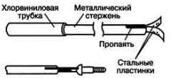
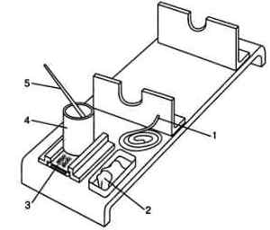
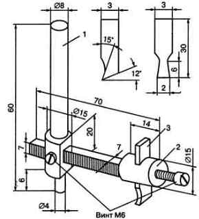

Самодельные инструменты
Самодельная отвертка
Для установки винтов в труднодоступном месте можно рекомендовать самодельную отвертку, конструкция которой показана на рис. 1. На конце металлического прутка диаметром 5-6 мм ножовкой пропиливают паз, в который вставляют и пропаивают стальные пластинки от часовой пружины. Вставленные в шлиц, они хорошо удерживают винт за головку. После установки винта на место его можно завернуть обычной отверткой.

Рис. 1 - Отвертка
Подставка для паяльника
Во время работы у электрического паяльника нагревается не только жало, но и кожух, закрывающий его обмотку. Поэтому нельзя класть паяльник куда попало. Для паяльника необходима подставка (рис. 2), оснащенная всем необходимым: трубчатым припоем 1, куском твердой канифоли 2, сверточком марли 3, о которую вытирают жало паяльника, сосудом с жидкой канифолью 4 и кисточкой 5. Подставка выполняется из листового алюминия, к которому приклепывают или привинчивают два уголка.

Рис. 2 - Подставка для паяльника
Приспособление для вырезания больших отверстий
При необходимости вырезать большое отверстие, диаметр которого превышает диаметр самого толстого сверла, можно с помощью приспособления, показанного на рис. 3.

Рис. 3 - Приспособление для вырезания больших отверстий
В квадратное отверстие шпинделя 1 вставляется поводок квадратного сечения 2 и закрепляется винтом, а в отверстие на его конце - сменный резец 3, который зажимается винтом. В обрабатываемой детали сначала сверлят обычным способом отверстие диаметром 4 мм. Затем в патрон дрели зажимают шпиндель, а его хвостовик - в это отверстие, и выполняют сверление.